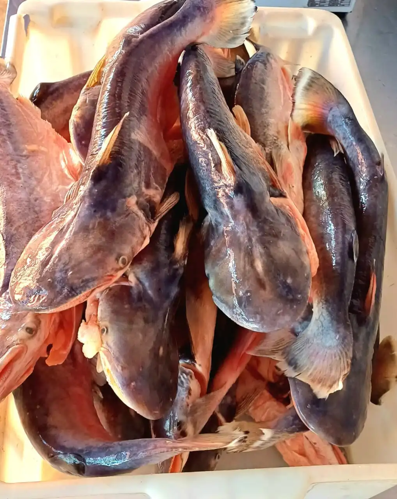
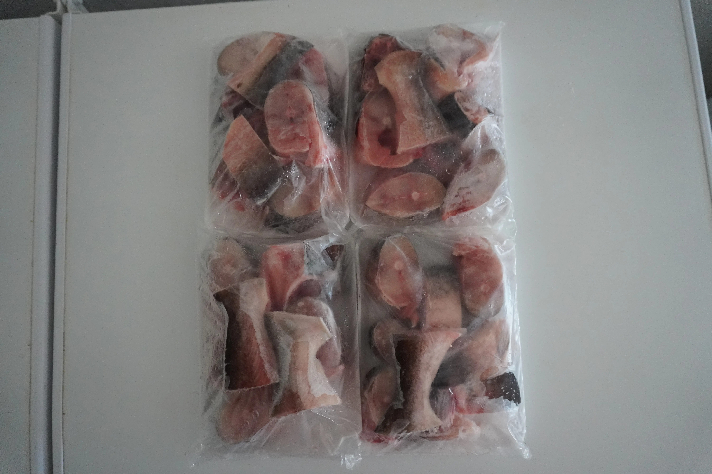

Peixe Palmito
Mandi-Palmito — Peixe de Couro do Paraguai
Escolha o Corte:
Retire na loja: R. Bom Jardim, 379 — Centro, Cáceres.
Peixe Palmito: A Joia Discreta do Rio Paraguai
O Peixe Palmito, carinhosamente chamado de Mandi-Palmito pelos pescadores pantaneiros, é um dos tesouros mais subestimados das águas do Rio Paraguai. Pertencente à família dos bagres — peixes de couro sem escamas —, ele habita as margens e fundos lodosos do rio, onde encontra abundante alimentação. Quem o conhece, raramente o troca por outro: sua carne de coloração amarelo-clara apresenta um sabor rico e marcante, resultado de uma dieta natural e de um habitat inalterado.
Carne Delicada e Ausência de Espinhas
Uma das maiores vantagens do Peixe Palmito em relação a outros peixes de rio é a quase total ausência de espinhas intermusculares. Como todo peixe de couro, sua estrutura óssea é simples, o que torna o preparo e o consumo muito mais práticos — inclusive para crianças e idosos. A carne, de textura firme mas extremamente macia após o cozimento, desfaz-se em lascas suculentas que absorvem bem qualquer tempero.
Dicas de Preparo: Ensopado ou Frito
O Palmito brilha em dois preparos clássicos da culinária ribeirinha. No ensopado pantaneiro, as postas são cozidas lentamente com tomate, cebola, pimentão e coentro, formando um caldo dourado e encorpado que aquece a alma — perfeito servido com arroz branco e banana da terra frita. Já frito por imersão, com a pele crocante dourada e temperado apenas com sal e limão, o Peixe Palmito revela toda a pureza do seu sabor. Uma frigideira bem quente e azeite suficiente são os únicos segredos.
Na Peixaria Rio Paraguai, o Peixe Palmito é capturado de forma artesanal e chega à loja ainda no mesmo dia. Trabalhamos com pescadores parceiros que respeitam a piracema e os limites de captura, garantindo a manutenção do estoque natural do rio. Ao encomendar pelo WhatsApp, você escolhe o corte ideal e retira com a certeza do frescor absoluto.